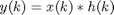

FreqSelectClass
Parent class: AttributeClass. Frequency selectivity of RF/analog blocks.
Properties
Methods
flt
This member is a concatenation of a filter nominator and denominator. Best recommended to be used with MATLAB filter design functions.
process@FreqSelClass
OUTP=process(OBJECT,INP)
The INP signal is recommended to be an object of SignalClass. The frequency selectivity is implemented with:

The return value OUTP is also an object of SignalClass. The method applies the frequency selectivity attribute.